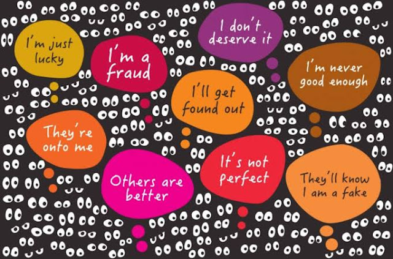

The Silent Struggle: Navigating Life with Imposter Syndrome
What is Imposter Syndrome?
Imposter syndrome is believing that you are a fraud despite achieving genuine success. Usually, those who experience imposter syndrome are high-achieving individuals who self-doubt their capabilities in fields they evidently excel in. Regardless of the explicit affirmation, they feel as though they will be exposed for the lack of their intelligence and achievement, when in reality the contrary is true. Because of these persistent feelings of doubt, imposter syndrome can diverge into numerous types that reflect differently in their personal and professional relationships. (Cuncic, 2024)
What are the types of Imposter Syndrome?
The Perfectionist: The individual presumes that if they are not perfect, they could have done something to achieve perfection. Because of your tendencies toward perfectionism, you are constantly believing that you are less than if perfection is not attained. Consequently, many of the people who are perfectionists tend to be control freaks, feeling that if they want something to be done perfectly and right, it must be done by them.
There are questions you can ask yourself to identify whether you feel this type of imposter syndrome:
The Expert: Since this imposter has not obtained all the knowledge about this subject and hasn’t mastered it to the last step, they live by the concept that there is more to learn; as a result, they are never satisfied with their knowledge and believe the label “expert” is out of reach and does not properly describe them. These individuals measure their prowess based on “what” or “how much” they know or can accomplish; hence, they fear they will be discovered as inexperienced.
The Natural Genius: The natural genius feels like a fraud because they are not naturally intelligent. They measure their worth based on the ease and speed of accomplishment and disregard effort. They define intelligence and geniosity as being able to master a skill from the first exposure.
The Superperson: In this type, the individual measures their competence by ensuring that the amount of effort they exert is the highest amongst their colleagues. If the person does not exert more than required effort then this translates to being a fraud. Thus, this creates workaholics who are certifiably addicted to the validation received, striving for external validation to measure how “well” you performed.
These are questions you can ask yourself to identify whether you feel this type of imposter syndrome:
The Soloist: The manifestation of independence is taken a step too excessively. In this case, the individual takes pride in not asking for help to prove their value. They believe that asking for help to achieve something makes you a fraud because technically you did not do it on your own and required a lending hand.
These are questions you can ask yourself to identify whether you feel this type of imposter syndrome:
Imposter Syndrome can arise within us through different experiences and circumstances, and some characteristics can cause our emotions to be more prominent; therefore, we must try to be aware of these causes and develop coping mechanisms.
What causes us to feel Imposter Syndrome?
Parenting Styles: If you grew up in a family that valued achievement and based the extent and importance of achievement on providing forms of affection, this creates adults who place absurdly high expectations on themselves and measure their worth based on incorrect standards and beliefs. Subsequently, when they do not reach these expectations, they begin to fall into the imposter syndrome mindset.
New Opportunities and Environments: Being placed in a new environment and faced with opportunities can create inklings of self-doubt and a fear of not being able to perform to the best of your abilities. Transitional phases place pressure on people to present their best front.
Personality Traits: Some personality traits invoke this sense of not belonging. For example, those with low self-efficacy doubt their capabilities and their ability to succeed; thus, amongst successful individuals, they feel less than. In addition to low self-efficacy, some are high on the neuroticism scale. Those who are high on that scale exhibit traits such as tension, anxiety, guilt, and insecurity.
Social Anxiety: Social anxiety is a psychological disorder in which a person is extremely fearful and anxious to the point of dysfunction in social situations. Thus, a person with social anxiety feels that they do not belong in certain situations; consequently, people with this disorder may fuel their imposter syndrome.
How do we cope with Imposter Syndrome?
By communicating and voicing these emotions aloud, we begin to rethink and alter some irrational beliefs that fester within us.
Assessing our abilities allows us to be aware of our accomplishments and successes and realistically identify our capabilities.
When we focus on others’ accomplishments and successes, we tend to believe that we are not as worthy or not as accomplished; this causes us to fall back into the rabbit hole of believing that we do not belong.
Question your belief system and assess them. By questioning the metrics of measurement you use to determine competence, you can begin through baby steps to be proud of simple accomplishments and not expect perfection all the time.
When you experience imposter syndrome for some time, you can begin to anticipate its effects; consequently, you begin to accept these emotions rather than fight them.
Naturally, every once in a while, we are overcome with this feeling of not belonging and believing as though we are not worthy. During these times, we begin to doubt our capabilities and underestimate our intelligence, talent, and grit, praying that those around us do not realize our shortcomings. We are encompassed with the concept that we are utterly on our own and that no one could possibly fathom what we are experiencing. All of these emotions are correlated to imposter syndrome.
Additional Resources: YouTube Videos